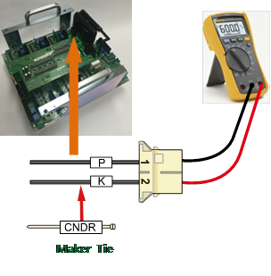

Previous error code: E0010 AMP recovery discharge resistance overheating
1.1.51.1. Outline
Recovery electric power that generated when Robot reduces a speed or moving toward to a gravity direction is discharged by resistance.
This error is related to an overheat that caused by the resistance.
It could occur due to a fault in the overheating detection sensor circuit, the disconnection of the resistor, or exceeding the three-phase power voltage.
1.1.51.2. Causes and examine methods
|
Overhear error may occurs in a case when resistor has disconnection or discharge control malfunction. It also can occur when recovery discharge resistance value and a 3-phase voltage increases
< Case: Error always occurs at the moment when the motor turns on > (1) Check the regenerative discharge resistor value. n Please examine the resistance value of CNDR cable.
(2) Check the servo drive unit. n Check after replacing the servo drive unit
(3) Please examine the components that are related to the power. n Please examine the 3-phase voltage from the inside of controller. n Please examine the controller¡¯s 3-phase input voltage. |
(1)Check the regenerative discharge resistor value..
The overheating error could occur due to the disconnection of the resistor or an increase in the regenerative discharge resistor value.
n Examining recovery discharge resistor¡¯s disconnection
If measured resistance value at the end of CNDR cable is many M ohm, the resistor¡¯s disconnection or connection problem of internal wiring caused this error. Please replace the recovery resistor with new one or repair the wiring.

(a) Hi5a-S00 controller
(b) Hi5a-S30 controller

(c) Hi5a-N00 controller

(d) Hi5a-N30 controller
Figure 1.160 Measuring the resistance value at CNDR
(2)Please examine the components that are related to the power.
The overheating error could also occur due to an abnormality with the discharge control circuit.
n Replacement of drive unit and examine it
Replace the regenerative discharge resistor overheating error detection module and then check if the error occurs again. An error may occur continuously due to a module¡¯s internal circuit malfunction.
¨ª Hi5a-S controller
l Medium size Robot¡¯s Servo Drive Unit: SD3X3Y
l Small size Robot¡¯s Servo Drive Unit: SD3A3D
¨ª Hi5a-N controller
l Medium size Robot¡¯s diode module : SD1L2C
l Small size Robot¡¯s Servo Drive Unit : SA3A3D
(3)Please examine the components that are related to the power.
Overhear error may occurs in a case when resistor has disconnection or discharge control malfunction. It also can occur when recovery discharge resistance value and a 3-phase voltage increases.
n Examine the 3-phase voltage (inside of the controller)
Recovery discharge operation activates from approximately DC 375V
If a voltage over AC242 V enters to the Servo Drive Unit, a recovery discharge resistance overheat error may occur when the motor turns on.
If the input voltage exceeds the allowed range, please examine according to a controller¡¯s input voltage examination procedures and a controller¡¯s 3-phase internal voltage examination procedures.
¨ª Servo Drive Unit input voltage specification: 3-phase AC 220V
¨ª Allowed range when motor turns on: 198 V ~ 242 V